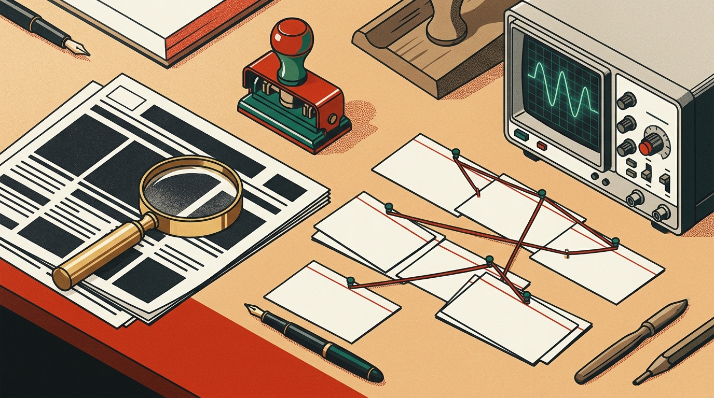

Emergency Nighttime Dam Release Flooding Highway 6
@BrazosValleyAlertNow (riverwatch-daily-buzz.net)
You are on the evening verification desk. Viral flood claims, miracle study headlines, imposter relief links, and synthetic voice memos are hitting community feeds. Use lateral-reading instruments to cross-check WHOIS registries, raw chart baselines, and primary telemetry before issuing your editorial stamp.

Testing a real-world post, forwarded message, or study headline outside the 6 dispatches? Paste the headline below and toggle any lateral-reading red flags you observe to compute a live Credibility Risk Score.